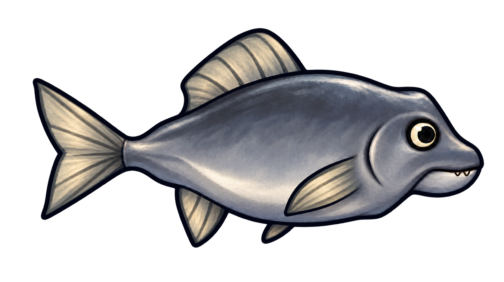
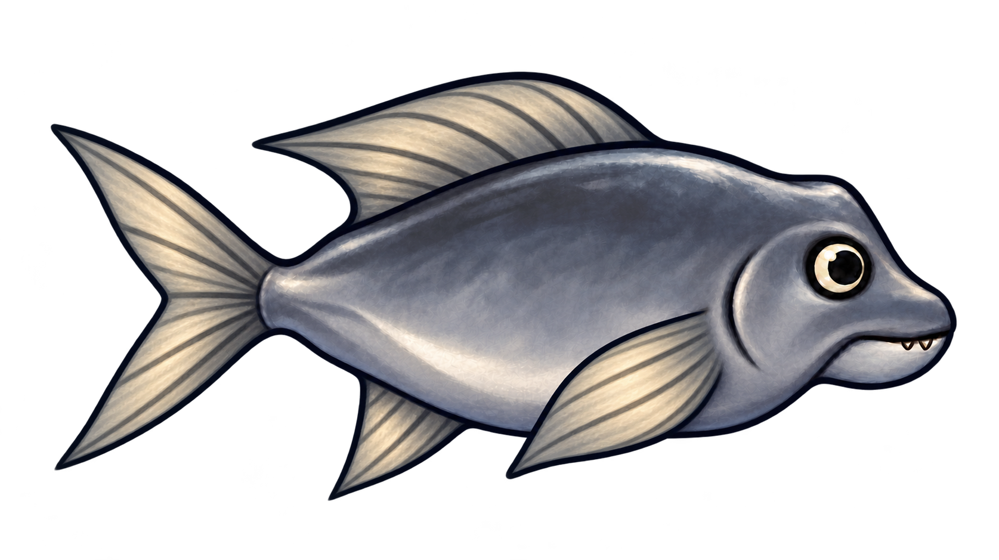
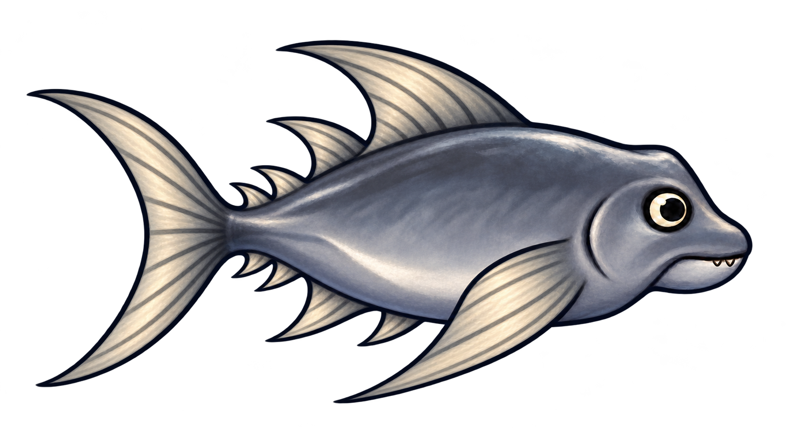

00 · BASIS
Der Ausgangspunkt
Kompakte Brust- und Bauchflossen, eine einzelne Rückenflosse und die ursprüngliche Schwanzform. Unverändert aus der ersten Reihe übernommen.
Transparentes PNG herunterladenDrei Flossen-Stufen und dieselbe Basis zum Vergleich. Größere Steuerflächen, eine zweite Rückenflosse und schließlich Sichelflossen mit kleinen Leitflösschen formen die Entwicklung.

Kompakte Brust- und Bauchflossen, eine einzelne Rückenflosse und die ursprüngliche Schwanzform. Unverändert aus der ersten Reihe übernommen.
Transparentes PNG herunterladen
Breitere Brust- und Bauchflossen, eine zurückgezogene Rückenflosse und eine stärker gegabelte Schwanzflosse.
Transparentes PNG herunterladen
Lange Brustflossen, ein zweiter Rückenstabilisator und eine hoch gegabelte Schwanzflosse prägen die neue Silhouette.
Transparentes PNG herunterladen
Eine große sichelförmige Schwanzflosse, lange Steuerflossen und kleine Leitflösschen vor dem Schwanz bilden die stärkste Form.
Transparentes PNG herunterladen